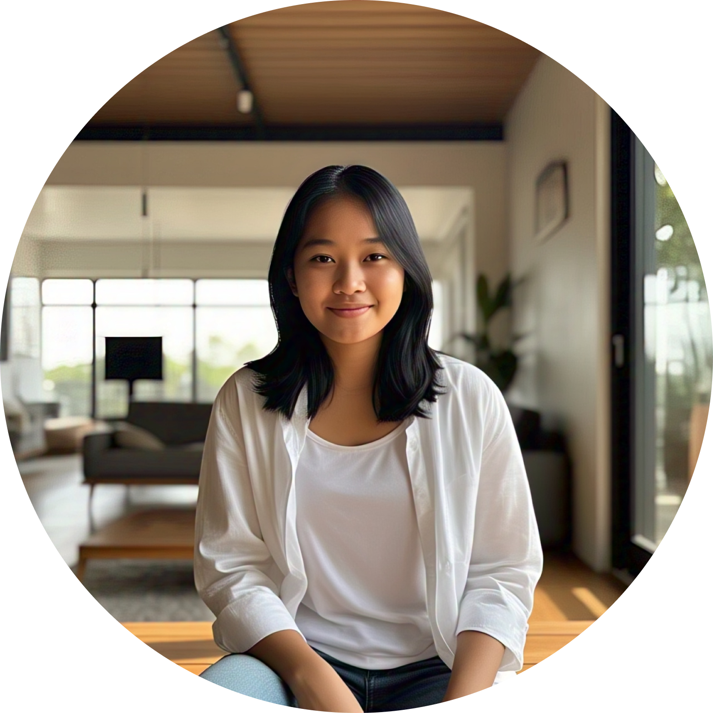

Project Overview & Problem
Proyek ini bertujuan meredesain antarmuka Website Paroki Curug Gereja Santa Helena yang lama, yang dikeluhkan umat karena sulit dinavigasi, tidak responsif di mobile, dan tampilan kurang menarik.
Masalah Navigasi
Pengguna (terutama umat dewasa) merasa kesulitan mendapatkan informasi relevan dan bingung karena navigasi yang rumit.
Isu Responsivitas
Tampilan berantakan dan ukuran font terlalu kecil saat diakses melalui telepon seluler, memaksa pengguna untuk zoom berkali-kali.
Estetika & Konsistensi
Desain kurang modern, tidak konsisten antar halaman, dan tidak sesuai dengan tren saat ini.
My Role: User-Centered Design (UCD)
Metode: User-Centered Design (UCD)
Peran: UI/UX Designer & Product Strategist
Tools: Figma, Google Forms, Wawancara, Teori Desain (Gestalt & 8 Golden Rules)
Fokus Redesain:
- Membuat navigasi intuitif dan tata letak rapi.
- Menggunakan tipografi yang jelas dan ukuran font mudah dibaca.
- Menghadirkan tampilan mobile responsif dan nyaman diakses.
- Memastikan konsistensi visual (warna, font, ikon) di setiap halaman.
- Menerapkan prinsip Internal Locus of Control agar pengguna merasa memiliki kuasa penuh atas interaksi.
5 Target Persona: Wawasan Pengguna
Clara
Umat Muda (20 tahun)
- Tujuan: Website modern & responsif.
- Pain Point: Desain tidak menarik, jadwal misa tidak jelas.
Prototype Preview (Desktop View)
Eksplorasi prototipe interaktif di Figma. Fokus pada navigasi horizontal dan pengelompokan informasi yang rapi.
“Proses redesain membutuhkan perencanaan matang yang didasari teori desain, agar hasilnya tidak hanya modern, tetapi juga mudah dimengerti dan sesuai ekspektasi pengguna.”
— Kesimpulan Proyek